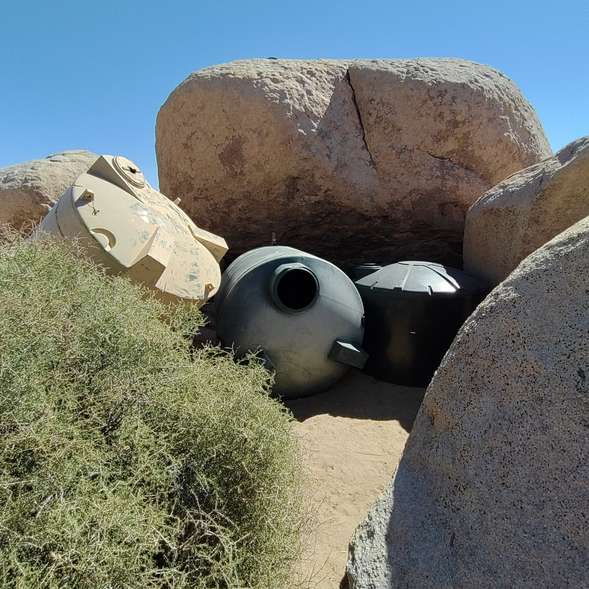
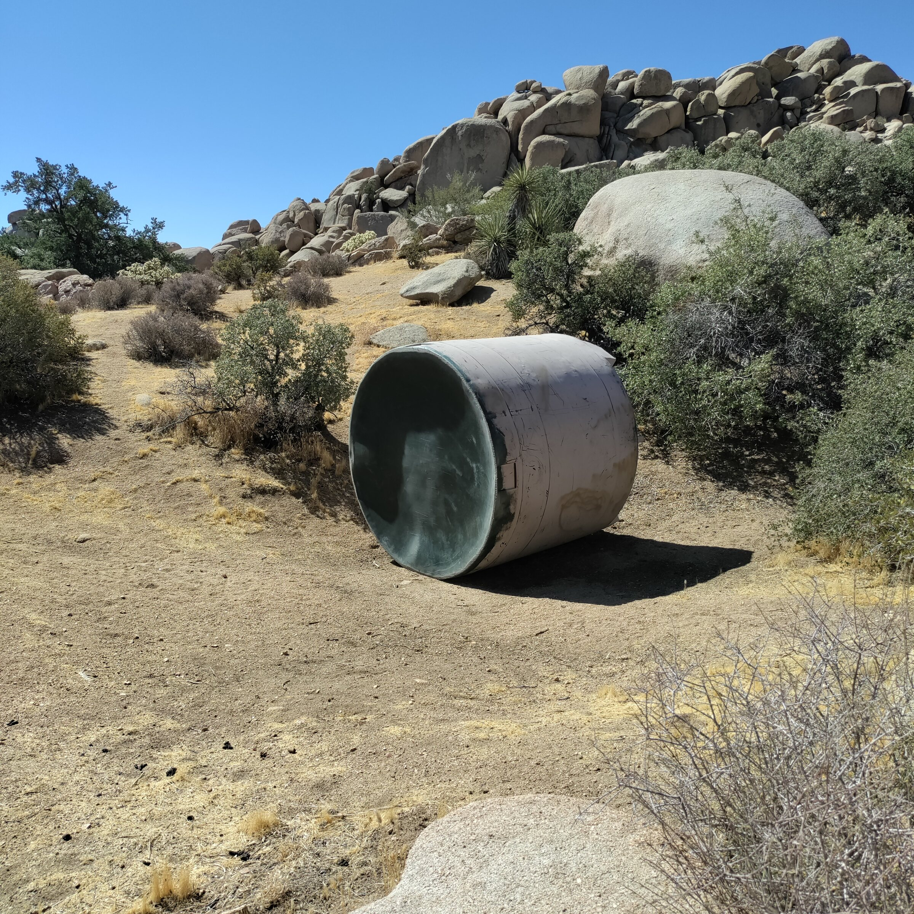

Field Report 011 · Water
Water Wasted
Continuous tank-level observations beginning in mid-August provided the first useful picture of everyday water consumption at Boulder Gardens.

Field Observation — Village Water Use, August 2026
Update: 8/28/26 Another two times spigots were left open last night. One at the pool and the other at the turtle pond. Robert estimates about ten tanks over the past year have been wasted.
Continuous tank-level observations beginning in mid-August provided the first useful picture of everyday water consumption at Boulder Gardens.
Between August 17 and August 25, measured 24-hour water use was approximately 105
76
106
101
168
73
118
81.5 gallons per day.
Over the eight-day period, approximately 828.5 gallons were used, averaging about 104 gallons per day.
Most days clustered near 100 gallons, with the highest observed use being 168 gallons during the August 21–22 period.
These measurements provide a baseline for normal community water consumption and make unusual losses easier to distinguish from ordinary use. Earlier in August, separate incidents had resulted in approximately 500 gallons and 1,500 gallons being accidentally drained, underscoring the value of continuous tank monitoring.
Photographic Record
The work, seen in place
Selected photographs from the private FieldStation source record.


System Thread
Related Fieldstation records
Public synopsis derived from Boulder Gardens Fieldstation Workbook source record FR011. Detailed equipment records, calculations, unresolved questions, and corrections remain in the workbook.